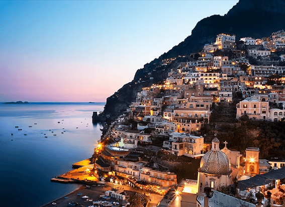
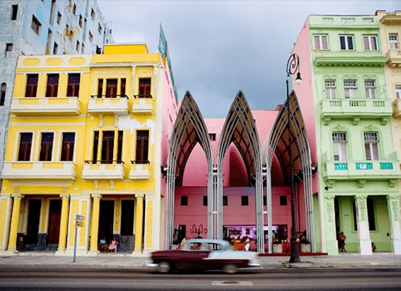

NATIONAL GEOGRAPHIC
The story behind Basque burnt cheesecake
TRAVEL
Caramelised on top, jiggly in the centre, served with no garnish, tossed across the bar with nothing more than a fork the five-ingredient cheesecake from La Viña in San Sebastián, Spain, has managed to captivate chefs and diners across the world, under the name Basque burnt cheesecake.
It’s found new life as far afield as Singapore, where it’s been reincarnated as a soft serve ice cream, and on the pages of the New York Times, which declared it a ‘Flavor of the Year’ for 2021 all while still being slung out by the slice at the family-run restaurant where it was created.
A cursory perusal of the internet offers an array of variations, or what a Basque person would likely call aberrations, on this heat-blasted custardy dessert. You’ll find it flavoured with electric purple ube, baked in the shape of a heart, over-burnt, slathered with speculoos cream, or even as an ice cream sundae garnish. With more than 229,000 tags on Instagram, #BasqueBurntCheesecake has taken on a life of its own, but if you ever want a taste of the original, classic version, you can count on La Viña to never, ever change.
Origins
La Viña opened its doors in 1959, founded by Eladio Rivera, his brother Antonio, and their wives, Carmen Jiménez and Conchi Hernáez. Eladio’s son Santi started working in the bar from a young age. A passionate, self-taught cook, he was spurred on by advice from his chef friends and the occasional cooking course.
“On my days off, I would come to work. Everything would be empty, and I could work and do tests in the kitchen,” Santi says. “Pintxos, dishes for the restaurant… among these tests, I tested the cheesecake and would make it every now and then, until people started asking for it more and more.”
Cheesecake wasn’t a traditional Basque dish, but this was the late 1980s and Santi was filled with ideas from courses he’d attended further afield, in places such as Paris. Cream cheese and other ‘modern’ food items were just reaching Spain for the first time as it opened up to the global economy, and Santi loved to experiment.
The cheesecake was served for years, but it was only when the trend for pintxo tours took off in the 2000s, that foreigners en masse began to discover La Viña’s cheesecake, which lines the shelves of the bar, still in springform tins, with singed parchment paper poking out the top. Instagram and Tripadvisor have boosted the profile further, and Santi has even shared the recipe online there are no trade secrets here.
“Basque chefs drafted the statutes of Basque Cuisine, and one of them was that cuisine should be transmitted to the general public for all to enjoy,” he says. “I live by that statute. There always a 15% that can’t be taught not because you don’t want to, but because it’s in the hands of the person making the dessert.”
How it’s made
An adaptation of the traditional cheesecake with a flan-like twist, a classic Basque burnt cheesecake contains nothing more than cream cheese, eggs, cream, sugar and a bit of flour. What makes this dessert unique is actually its ‘missing’ ingredients and ‘incorrect’ technique.
While a normal baked cheesecake involves cooking the delicate eggy custard at a relatively low heat, this cake gets somewhat rougher treatment it’s cooked at what’s technically too high a temperature, meaning the parts of the cake in contact with the pan brown into a natural crust, while the top burns in places and the interior remains jiggly and loose.
Embellishments such as ice cream and berry coulis, were out of the question due to space restrictions in the kitchen at La Viña. The biscuit base? Also a victim of streamlining. Basque burnt cheesecake is, at heart, a rough-and-ready dessert but therein lies its deliciousness.
Where to eat it
La Viña
Trying the original cheesecake at the source is a must, if only to have a reference for every other version in town. Pair it with a PX sherry or Santi’s favourite a glass of txakoli (a dry, slightly sparkling white wine). During high season, you’ll likely have to queue, as this little spot on San Sebastián’s busy 31 de Agosto Kalea is at the top of every visitor’s list and fills up quickly.
Ekaitz
Ekaitz is a traditional Basque erretegia (grill house) on the outskirts of San Sebastián, in the incorporated village of Igeldo. Be sure to leave room after its exquisite grilled txuleta steaks and garlic-kissed fresh fish as Ekaitz’s cheesecake is one of the city’s most famous — a sort of hybrid of the Basque and New York styles, with a biscuit base, berry compote topping and very creamy cheese filling.
Comments :
- john Very good
- john Very good
Leave a Reply
Your email address will not be published. Required fields are marked*
Related posts:
-
Travel Italy's Most Scenic Stretch of Coastline
The Amalfi Coast is the playground of the social elite and well-heeled, but don’t let that throw you. The Italians love kids and this area puts everyone at close quarters.
View article -
Get Off the Tourist Track in Havana
To get an inside glimpse of daily life for the average Cuban, you and your kids should skip the hotels and stay in one of the hundreds of casas particulares sprinkled throughout Havana, the Cuban equivalent of B&Bs
View article -
Why a Trip to New York is a Rite of Passage
For a first trip, stick with Manhattan, the classic microcosm of the world. There’s no major influence, theme, subject, attraction, or trend that in some way isn’t touched or reflected in the work, play, creativity
View article